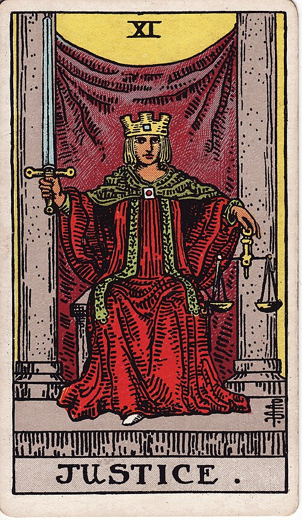

| Arcana | Major · XI |
| Suit | — |
| Element | Air |
| Attribution | Libra |
Justice
In shortWhat you did is catching up with you, fairly.
Upright
This is about consequences being worked out honestly: what was actually done, what is actually owed, and what a fair outcome looks like once feelings are set aside. It often comes up around legal matters, contracts and formal decisions, but more broadly it means a situation is being weighed and the result will follow the evidence. Where you have behaved well, that is good news.
Reversed
Something here is not fair. That might be unfairness you are on the receiving end of, or responsibility being dodged — sometimes by you. It can also be a judgement made on half the information and then defended out of pride. This card asks for the uncomfortable version of the story: the one that includes your own part in how things got here.
The turn
Tell the version of events that includes your part in it. Then decide what you owe.
Reading with your own deck?
Sage records the cards you actually pull, writes the reading, keeps every one, and shows you what keeps returning across them. Free, private, no account.